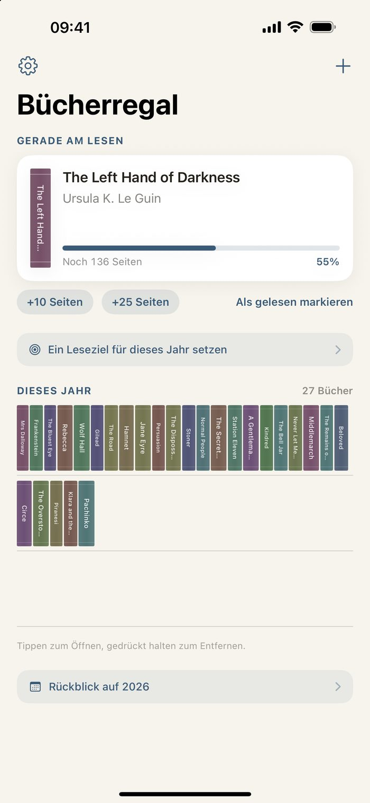
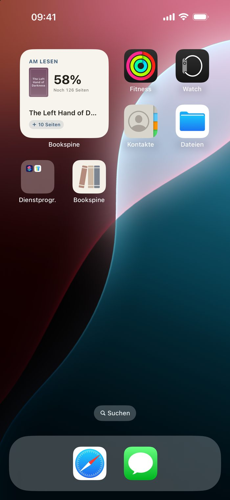

So bringst du das Buch, das du gerade liest, auf den Home-Bildschirm deines iPhone
Ein Lese-Widget hält das Buch, in dem du gerade steckst, dort, wo du mehrmals am Tag hinschaust – das Cover, wie weit du bist und wie viele Seiten noch übrig sind.
So richtest du eines ein mit Bookspine. Das kleine Widget ist kostenlos.
1. Das Buch hinzufügen, das du gerade liest
Öffne Bookspine und tippe auf +.
Suche nach Titel oder Autor oder scanne den Barcode auf der Rückseite. Titel, Autor und Cover werden für dich ausgefüllt.
Das Buch landet unter „Gerade am Lesen“.

Kein Barcode oder kein Treffer? Füge es von Hand hinzu – nur der Titel ist nötig.
2. Das Widget auf den Home-Bildschirm legen
Lege den Finger auf eine freie Stelle des Home-Bildschirms, bis die Apps wackeln.
Tippe auf Bearbeiten (oder +) oben in der Ecke und suche dann nach „Bookspine“.
Wähle die Größe Klein und tippe auf Widget hinzufügen.

3. Seiten direkt im Widget hinzufügen
Tippe auf „+10 Seiten“ im Widget, während du liest. Die App muss sich dafür nicht öffnen. Wenn du die letzte Seite erreichst, wird das Buch als gelesen markiert und kommt in dein Regal.
Mehr auf dem Home-Bildschirm?
Mit Bookspine Pro (ein Einmalkauf, kein Abo):
Mittel: Cover, Fortschrittsbalken, verbleibende Seiten und dieses Jahr gelesene Bücher
Groß: das Regal dieses Jahres – jedes gelesene Buch, nebeneinander
Sperrbildschirm: dein Fortschritt, ohne zu entsperren
Fragen
Ist das Lese-Widget kostenlos?Ja. Das kleine Widget – das Buch, das du gerade liest, sein Cover oder Buchrücken und wie weit du bist – ist kostenlos, ohne Werbung und ohne Konto. Das mittlere und das große Widget sowie die Sperrbildschirm-Widgets gehören zu Bookspine Pro, einem Einmalkauf.
Ich lese zwei Bücher. Welches wird angezeigt?Das kleine Widget zeigt das Buch, das du zuletzt begonnen hast.
Was, wenn das Buch keine Seitenzahl hat?Du kannst es trotzdem hinzufügen – nur der Titel ist nötig. Der Fortschritt wird dann in Prozent geführt, und jedes Tippen auf das Widget fügt 5 % hinzu.
Was passiert, wenn ich die letzte Seite erreiche?Das Buch wird als gelesen markiert und kommt in dein Regal, wo gelesene Bücher in der Reihenfolge stehen, in der du sie gelesen hast.